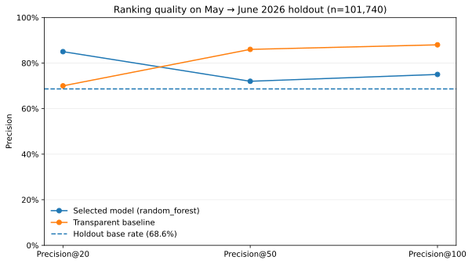
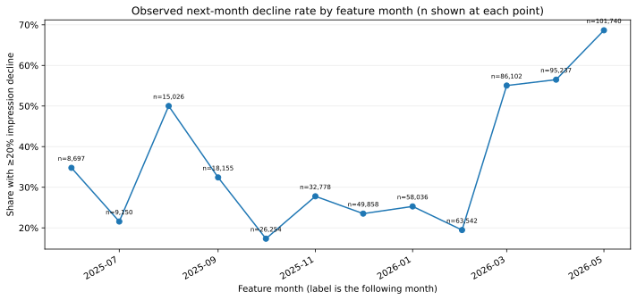
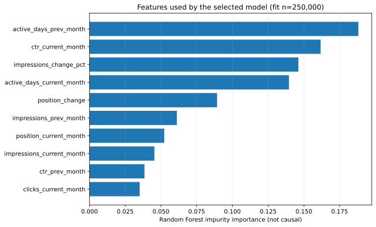

Title + Abstract
This study asks whether monthly search-performance signals can help rank content items likely to see a meaningful decline in the following month. It aggregates the gated FlyRank internship warehouse at client-content-month grain and defines the target as next-month impressions at least 20% below the feature month, with a minimum of 100 impressions and valid Google Search Console coverage. It compares a transparent visibility-plus-momentum baseline with Logistic Regression and Random Forest, using February–April 2026 for model selection and May features → June outcome as the final holdout. An earlier 30,000-row starter-snapshot run reported Precision@50 of 0.740 for Random Forest versus 0.240 for the rule baseline, but those figures are not treated as the primary capstone result because the old feature windows overlap the trend-label window. The intended output is a ranked editorial review queue for human decision support, not a prediction of Google's algorithm or a causal claim that refreshing content improves traffic.
Introduction / Problem statement
Editorial teams face a prioritization problem: there are more pages to inspect than time available, and the oldest page is not always the page that needs attention first.
A simple recency or volume rule is easy to understand but may ignore several signals at once. This capstone asks whether a compact supervised model can rank content items with an elevated chance of a substantial next-month impression decline better than a readable visibility-plus-momentum baseline.
The unit of analysis is a pseudonymized content item for a given feature month. The output is a score and rank, with a human editor deciding whether to inspect the page. A false positive consumes review time; a false negative may leave a deteriorating page unchecked. The study evaluates the quality of the ranked review list, not the impact of making an edit.
Data
Source, grain, and time windows
The primary analysis uses the gated FlyRank/internship-warehouse release, specifically the daily fact table for search performance. Daily records are aggregated to one row per pseudonymized client, content item, and calendar month. The notebook scans the May 2025 through June 2026 monthly partitions, then creates examples with feature months June 2025 through May 2026.
Impressions, clicks, average position, active days, CTR, and month-to-month change.
Choose a model without inspecting the final holdout outcome.
May features rank pages against the June decline proxy.
Eligibility and exclusions
Only daily rows with GSC availability explicitly marked true are included. A candidate needs valid GSC records in the previous, feature, and outcome months and at least 100 impressions in the feature month. Records with false or null coverage flags are not treated as zero performance.
The model excludes the outcome month's impressions, trend-direction fields, pseudonymous IDs, raw queries, URLs, page titles, client names, domains, and credentials. IDs are only used for joins. The query-level table, GA4 fields, and AI-referral metrics are excluded from the primary model because they are not needed for this target and coverage can be sparse.
Requiring three adjacent observed months creates a persistent-observation cohort. New, removed, or intermittently tracked pages may be underrepresented, so the findings should not be generalized to every page in the warehouse.
Methodology
Target and feature timing
The outcome proxy is positive when next-month impressions are at most 80% of current-month impressions. Every predictor is built from previous or current full-month data available at the feature cutoff. CTR and momentum are derived only from those historical windows; future-month totals are used only to create the label and are excluded from predictors.
Baseline and candidate models
The transparent baseline combines two percentile ranks: 50% current-month visibility, measured as log impressions, and 50% recent momentum risk, where more negative month-over-month impression change receives a higher rank. Logistic Regression and Random Forest are candidate models. Validation Precision@50 is the selection metric, with average precision and ROC AUC as tie-breakers.
Validation design
The time-aware split trains on feature months through January 2026, selects among candidates on February–April 2026, and evaluates once on May features with June outcomes. The final model is then refit only on pre-holdout examples. A fixed random seed of 42 is used, and the training sample is capped at 250,000 rows for practical Colab runtime; validation and test cohorts are not sampled.
Because this is temporal evaluation for an existing portfolio, the same content or client may appear in earlier months and later test months. It tests future-month ranking for content already being tracked, not generalization to unseen clients.
Results (vs baseline)
The time-aware final holdout ranks May 2026 content-month signals against June 2026 impression declines. Random Forest helps at the very top of the queue, while the transparent rule baseline performs better across the larger top-50 and top-100 review sets.
| Final holdout metric | Random Forest | Transparent baseline |
|---|---|---|
| Precision@20 | 0.850 | 0.700 |
| Precision@50 | 0.720 | 0.860 |
| Precision@100 | 0.750 | 0.880 |
| ROC AUC | 0.541 | 0.505 |
| Average precision | 0.713 | 0.710 |
At K=20, the model found 17 declines and the baseline found 14. At K=50, the baseline found 43 versus 36 for the model; at K=100, it found 88 versus 75. Validation decline prevalence was 46.4%, compared with 68.6% in the final holdout. That shift and the near-chance ROC AUC mean the experiment does not support an overall model win. The baseline is the stronger current default for larger review queues; treat the model's top-20 result as provisional until repeated across more future months.
Final holdout figures

docs/paper-assets/model_vs_baseline.svg.

The primary target is an observed next-month impression drop of at least 20%, among content with valid Google Search Console coverage in the previous, current, and outcome months and at least 100 current-month impressions. These are ranking metrics for human review prioritization, not evidence that a refresh will cause traffic gains.
The earlier starter-snapshot Random Forest Precision@50 of 0.740 and rule-baseline Precision@50 of 0.240 are retained only in the repository's audit report; those figures used overlapping windows and are not the headline result here.
Limitations & honest framing
- Proxy label: a 20% monthly impression drop is a defined operational target, not a human-confirmed refresh need.
- No causal effect: there is no randomized or matched intervention design, so the study cannot say that refreshing a page improves search traffic.
- One final outcome month: a June 2026 holdout provides a temporal check but not robustness across all seasonal cycles.
- Coverage selection: three-month GSC availability and an impression floor exclude some newer, removed, and low-volume pages.
- Unobserved context: seasonal demand, migrations, SERP changes, indexing problems, and tracking changes may resemble content deterioration.
- Scope of generalization: the test simulates the next month for an existing tracked portfolio, not unseen clients.
- Model interpretation: feature importance is predictive association and does not identify the effect of changing that feature.
Claims should use terms such as observed, measured, associated, directional, and decision-support. The study does not prove or predict Google's ranking algorithm.
Ranked recommendations
- Inspect high-visibility pages with worsening momentum. Confirm the decline persists after checking seasonality, tracking gaps, and shifts in demand.
- Review click-through rate in context. Compare only adequate-volume pages with similar intent and position; do not infer a snippet problem from a small sample.
- Investigate position deterioration. Check indexing, SERP changes, intent mismatch, internal linking, and competitor changes before rewriting.
- Verify content freshness and task completion. Update facts, examples, references, screenshots, or internal links only when there is an actual user need.
- Monitor ambiguous items. If the data is sparse or signals disagree, wait for more evidence rather than forcing an edit.
A human editor verifies user intent, factual accuracy, seasonality, brand voice, indexing, and internal links before changes are published. Never delete, redirect, or bulk-publish content solely because a model ranked it highly.
Reproducibility
The notebook, feature timing, target, validation split, model selection, and aggregate artifact generation are committed in the repository.
Open the capstone in Google Colab · View the full GitHub repository
Steps
- Request/confirm gated access to the FlyRank warehouse and add a read-only token to Colab Secrets as HF_TOKEN.
- Run all notebook cells from a fresh runtime. After a lightweight metadata probe, the notebook aggregates monthly facts in DuckDB and caches them locally under data/processed/ (ignored by Git); later runs reuse that cache. It does not export row-level queues.
- Download the notebook-generated public artifact bundle from Colab, extract it, and commit only work/outputs/capstone_metrics.json plus the three SVGs under docs/paper-assets (not the ZIP or local cache). Check the JSON against the displayed table.
- Commit the metrics receipt and aggregate charts only. Do not commit datasets, pseudonymous IDs, raw queries, credentials, domains, or URLs.
- Update this page with those exact metrics, enable GitHub Pages from main /docs, and record the verified live URL in submission/paper_url.txt as a single line.
Seed: 42. Dependencies are documented in requirements.txt; the notebook installs DuckDB, pandas, NumPy, scikit-learn, and Matplotlib when run in Colab.
Acknowledgments & data credit
Built on the FlyRank ML Internship dataset.